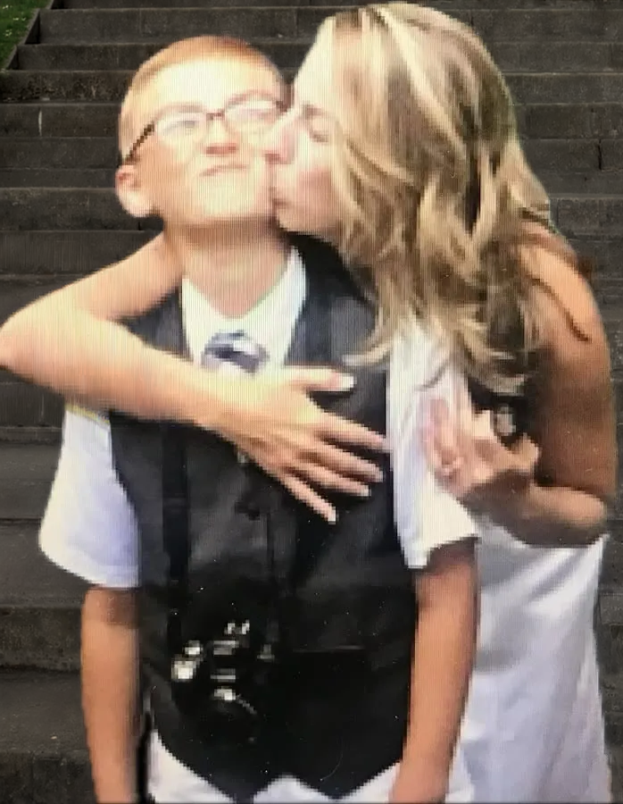
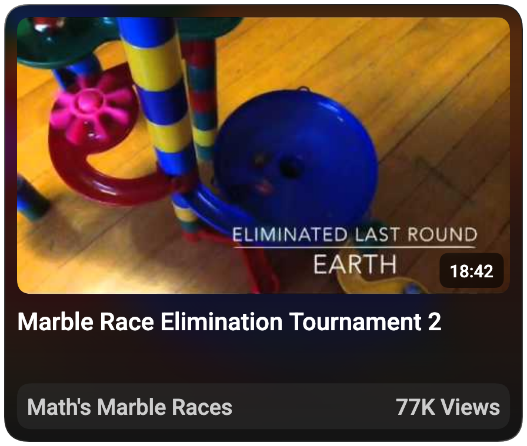
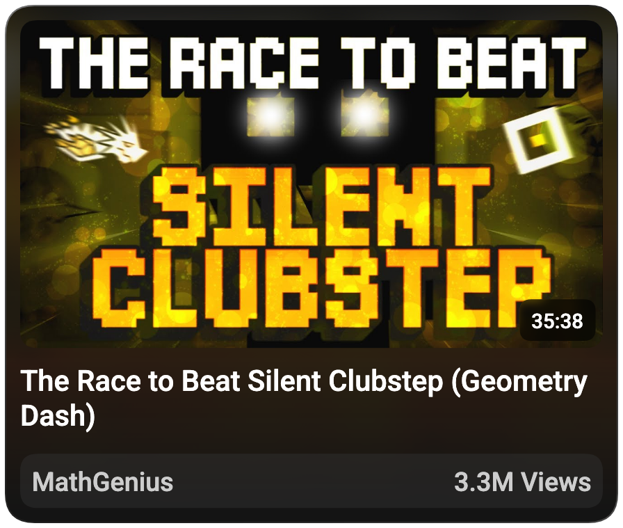
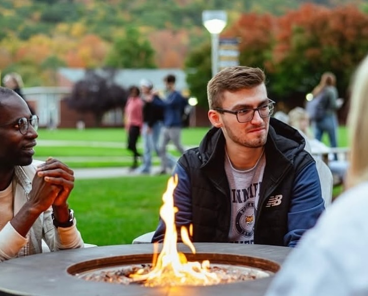

Early Years (Age <7)
From a very young age, I was the type of kid who heavily gravitated toward technology, almost like it was second nature. At two years old, I had already figured out how to type my own name and home address into Microsoft Word on the old Windows desktop my mom had in the house.
I think a lot of that probably stemmed from the environment I grew up in. My mom raised me on her own, and since she ran a daycare out of our house – partly out of necessity, and partly because I was an extremely clingy, deeply introverted kid who followed her around every waking minute and wasn't going anywhere without her — she had a lot of time to observe how I learned. She would handcraft lessons and flashcards for every subject, from colors and shapes to all 50 U.S. states and their capitals. Her words were that I absorbed and retained information like nothing she'd ever seen before. I'd have them memorized almost faster than she could make them.
I want to be clear... I'm not saying any of this to brag. I'm a very different person now than I was 15+ years ago. But looking back, there was clearly something about patterns, memorization, and solving problems independently that my brain clearly latched onto. By the time I started Kindergarten, I was apparently reading at a 3rd-grade level and had a genuine love for anything involving numbers. It might not directly explain why I ended up making YouTube videos about a game called Geometry Dash, but it certainly laid the groundwork of my desire to absorb, self-teach, and obsess over something until I understood it completely. Little did I know a few years later — with the help of a computer and my first iPad — I would finally discover an interest that would change course of my life in the best ways possible.

Introduction to the Internet (Age 8-11)
When I turned 8 years old, I received my first iPad. And while most kids immediately download every game they can find and never look up from the screen again, I was way more interested in the camera.
At the time, I had this habit of turning everything around me into some kind of competition. I'd set up elaborate obstacle courses around the house for my collection of Beanie Babies, I'd build Ninja Warrior and Wipeout courses on the playground in our front yard, and I was really into creating marble races — setting up tracks and filming different colored marbles racing against each other. So the second I had a device with a camera, the next logical step was for me to film it.
With my mom's permission, I created my first YouTube channel in July 2014. I'd record the videos myself, edit them in iMovie or Windows Live Movie Maker, and publish them completely on my own. Looking back at those early videos now, the quality is... not great. But that wasn't the most important part. During that time, I was slowly learning how to present myself in front of an audience, how to structure content, and how to keep people's attention — skills I didn't even realize I was building at the time.
From age 9 to 12, I kept uploading videos to YouTube, especially marble races, which became the forefront of the channel. The craziest part about it all was that the videos from that time period accumulated ~500,000 views, which, as a kid with a camera and no real strategy, definitely motivated me to continue and figure out what else I could make.

Geometry Dash (Age 13-17)
By the time I reached the end of middle school, marble races had run their course for me. My interests had shifted, and there was one thing in particular that had completely taken over my attention... Geometry Dash.
For those who are unfamiliar, Geometry Dash is a rhythm-based platformer where you navigate through obstacle courses synced to music, and using different game modes, you have to make it to the end of the level without crashing. If you do at any point, you reset all the way back at the beginning. Not only was I invested in beating the hardest levels possile, I also loved creating my own levels. So in 2017, I decided to start uploading Geometry Dash videos to my YouTube channel.
Unexpectedly, my views fell off a cliff almost immediately. My audience wasn't built around Geometry Dash, so naturally they weren't sticking around for it. But I kept going anyway. Around this same time, I got my first laptop, and in 2018 I started livestreaming on YouTube for the first time. This decision actually turned out to be the very thing that built the foundation of my Geometry Dash community. Within six months of streaming consistently, I had gained 500 subscribers. By November 2019, I hit 1,000.
Then the COVID-19 pandemic happened, and Geometry Dash experienced a massive surge in content creators. Suddenly there were channels putting out highly-edited, cinematic, professional-quality videos, and some of these people were making YouTube their full-time job. My editing at the time didn't come close to that level, and I knew it. But here's the thing about me: when I see someone in a position I want to be in, doing something better than I currently can, something switches in my brain and I lock in so hard. I've always worked well out of a weird combination of admiration and envy, not in a bitter way, but in an "Okay, I need to figure out how they're doing that" way. It pushes me harder than almost anything else.
So in September 2020, I uploaded one of my first genuinely well-edited videos, "Top 10 Highest Heart Rates Achieved in Geometry Dash," and it became my first viral video. It currently sits at 483,000 views, and combined with livestreaming every day to ride the wave of new viewers I was receiving, that video propelled me to nearly 10,000 subscribers within the following year.
In April 2021, I released what was, up to that point, the best video I'd ever made: "The Most Fun Extreme Demon in Geometry Dash." I analyzed over 15,000 level completions to find players' enjoyment ratings out of 10 for different levels, built a spreadsheet from scratch to compile the data, and edited it into 40+ minutes of content. I think this was the video that actually put my name on the map in a meaningful way. The heart rate video went viral because of the people in it. I was just the person behind the camera. This one was different, because it was my data, my research, and my perspective. Viewers felt a genuine connection to me for the first time, and that changed everything for my channel and my career.
In 2022 and 2023, I released what I still consider my best videos to date: "The Race to Beat Silent Clubstep" and "Guess the Difficulty of This Level, Win $100!" My editing in these videos had improved tenfold since 2020. I'd become a better storyteller, more confident on screen, more thorough with my research, and a lot better at marketing and packaging videos. And I think a lot of it came from obsessively studying what other creators were doing, seeing what was working, what wasn't, and what I personally found compelling to watch. Those two videos became my most-viewed by a significant margin (3.3M and 661K respectively), and they established me as a prominent figure in the Geometry Dash community. As of now, I sit at over 50,000 subscribers, and after a hiatus of over 1,000 days, I look forward to returning to YouTube, hopefully in the near future.

College (Age 18-Present)
In August 2023, I moved six hours from home to start my first semester at Quinnipiac University in Hamden, Connecticut, enrolled in their (3+1) accelerated Film, TV, and Media Arts program with a minor in Journalism.
I'll be honest... I was not prepared for how hard the adjustment was going to hit me. I'm a homebodied person. I grew up as an introverted only-child in a quiet, semi-rural part of Northern New York. Quinnipiac had just under 7,000 students on campus. I had three roommates, I didn't have a car, and I didn't know a single person there. For someone who genuinely thrives in calm, familiar environments and needs time alone, being dropped into that situation was like being a fish out of water.
That being said, the reason I chose Quinnipiac in the first place was because of their state-of-the-art film program. They had production studios, control rooms, professional-grade camera equipment available to rent, 4K editing suites, a podcasting room, and many other resources. I'd like to say I learned a lot of valuable information/skills during my time there. But somewhere in the middle of the school year, I started to realize that film wasn't quite what I wanted to pursue as a career after college. Film production is an inherently collaborative process (large crews, defined roles, shared creative ownership), and while I respect anybody who wants to take on those roles, I've always worked better when I'm operating independently with full control over every decision from start to finish. The video editing and motion graphics felt more like home to me than the being in a production studio. So halfway through the year, I switched my major to (3+1) Graphic and Interactive Design with a minor in Film and Television, which felt much more aligned with where I actually wanted to go.
What I didn't anticipate was how badly the workload was going to wear me down. I'm not someone who does well under tight deadlines or timed exams, not because I can't do the work, but because I'm inherently incapable of turning something in that isn't up to my own perfectionist standards. I overthink, I overcomplicate, and I will voluntarily sacrifice sleep before I'll submit something I'm not proud of. That last month of the school year — where I was pulling 3am and 4am nights back to back to back between final exams, projects, and labs — broke me in a way I hadn't experienced before. By the time it was over, I was completely burned out, and I still didn't have a clear picture of where I wanted to be after college was over.
So in August 2024, I made the decision to take a gap semester and then enroll part-time at Jefferson Community College in the spring as a reset. To be honest, I think that was the right call. JCC has been a drastically different experience; it's a lot smaller, calmer, and much more manageable. I've used the time there to take a wide range of courses, from Accounting and Psychology to Spreadsheets and Computer Programming, giving me a well-rounded range of skills while I figure out my next move. In Fall 2026, I'm planning to transfer to a new 4-year school (potentially St. Lawrence University??) to study Digital Media and Film.
Alongside that, I'm working on bringing my YouTube channel back to life after not uploading for over 1,000 days. This hiatus ended up being longer than I ever intended, but if there's one thing the last couple of years taught me, it's that burning yourself out in the pursuit of your goals isn't sustainable in the long run. This time, I want to build something that lasts, with a healthier, more balanced creative process that I can actually maintain.
